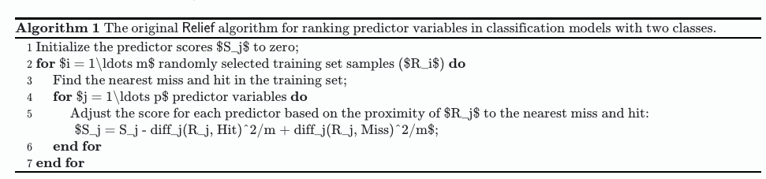

─ Session info ───────────────────────────────────────────────────────────────
setting value
version R version 4.2.0 (2022-04-22)
os macOS Monterey 12.6.1
system aarch64, darwin20
ui X11
language (EN)
collate en_US.UTF-8
ctype en_US.UTF-8
tz America/New_York
date 2023-02-15
pandoc 2.19.2 @ /Applications/RStudio.app/Contents/Resources/app/quarto/bin/tools/ (via rmarkdown)
─ Packages ───────────────────────────────────────────────────────────────────
package * version date (UTC) lib source
cli 3.6.0 2023-01-09 [1] CRAN (R 4.2.0)
digest 0.6.31 2022-12-11 [1] CRAN (R 4.2.0)
evaluate 0.17 2022-10-07 [1] CRAN (R 4.2.0)
fastmap 1.1.0 2021-01-25 [1] CRAN (R 4.2.0)
glue 1.6.2 2022-02-24 [1] CRAN (R 4.2.0)
htmltools 0.5.3 2022-07-18 [1] CRAN (R 4.2.0)
htmlwidgets 1.5.4 2021-09-08 [1] CRAN (R 4.2.0)
jsonlite 1.8.4 2022-12-06 [1] CRAN (R 4.2.0)
knitr * 1.40 2022-08-24 [1] CRAN (R 4.2.0)
lifecycle 1.0.3 2022-10-07 [1] CRAN (R 4.2.0)
magrittr 2.0.3 2022-03-30 [1] CRAN (R 4.2.0)
rlang 1.0.6 2022-09-24 [1] CRAN (R 4.2.0)
rmarkdown 2.17 2022-10-07 [1] CRAN (R 4.2.0)
rstudioapi 0.14 2022-08-22 [1] CRAN (R 4.2.0)
sessioninfo 1.2.2 2021-12-06 [1] CRAN (R 4.2.0)
stringi 1.7.12 2023-01-11 [1] CRAN (R 4.2.0)
stringr 1.5.0 2022-12-02 [1] CRAN (R 4.2.0)
vctrs 0.5.2 2023-01-23 [1] CRAN (R 4.2.0)
xfun 0.34 2022-10-18 [1] CRAN (R 4.2.0)
yaml 2.3.6 2022-10-18 [1] CRAN (R 4.2.0)
[1] /Library/Frameworks/R.framework/Versions/4.2-arm64/Resources/library
──────────────────────────────────────────────────────────────────────────────quarto-pseudocode-test
1 Introduction
Adopting Christophe Dervieux’s Rmd instructions to get algorithms in to Quarto HTML documents.
Using R version 4.2.0 (2022-04-22), Quarto 1.3.56, and RStudio IDE 2023.3.0.34 as well as
1.1 Setup:
His steps:
- Add an HTML file to include in the
_quarto.yml. - Add a
jscode block
issue 1: js block prompts me for a jupyter install:
Starting python3 kernel...Traceback (most recent call last):
File "/Applications/quarto/share/jupyter/jupyter.py", line 21, in <module>
from notebook import notebook_execute, RestartKernel
File "/Applications/quarto/share/jupyter/notebook.py", line 16, in <module>
import nbformat
ModuleNotFoundError: No module named 'nbformat'
Python 3 installation:
Version: 3.8.9
Path: /Applications/Xcode.app/Contents/Developer/usr/bin/python3
Jupyter: (None)
Jupyter is not available in this Python installation.
Install with python3 -m pip install jupyterIt doesn’t do that in another repo where I used this.
Weirdly, once I re-rendered that other repo, this one worked ¯\(ツ)/¯
1.2 The algorithm code
Here’s an example from the post:
\begin{algorithm}
\caption{The original \textsf{Relief} algorithm for ranking predictor variables in classification models with two classes.}
\begin{algorithmic}
\STATE Initialize the predictor scores $S_j$ to zero;
\FOR{$i = 1\ldots m$ randomly selected training set samples ($R_i$)}
\STATE Find the nearest miss and hit in the training set;
\FOR{$j = 1\ldots p$ predictor variables}
\STATE Adjust the score for each predictor based on the proximity of $R_j$ to the nearest miss and hit:\\
$S_j = S_j - diff_j(R_j, Hit)^2/m + diff_j(R_j, Miss)^2/m$;
\ENDFOR
\ENDFOR
\end{algorithmic}
\end{algorithm}(nothing shows up in the HTML output)
issue 2: (In another document) this same code renders but the LaTeX is not processed:
